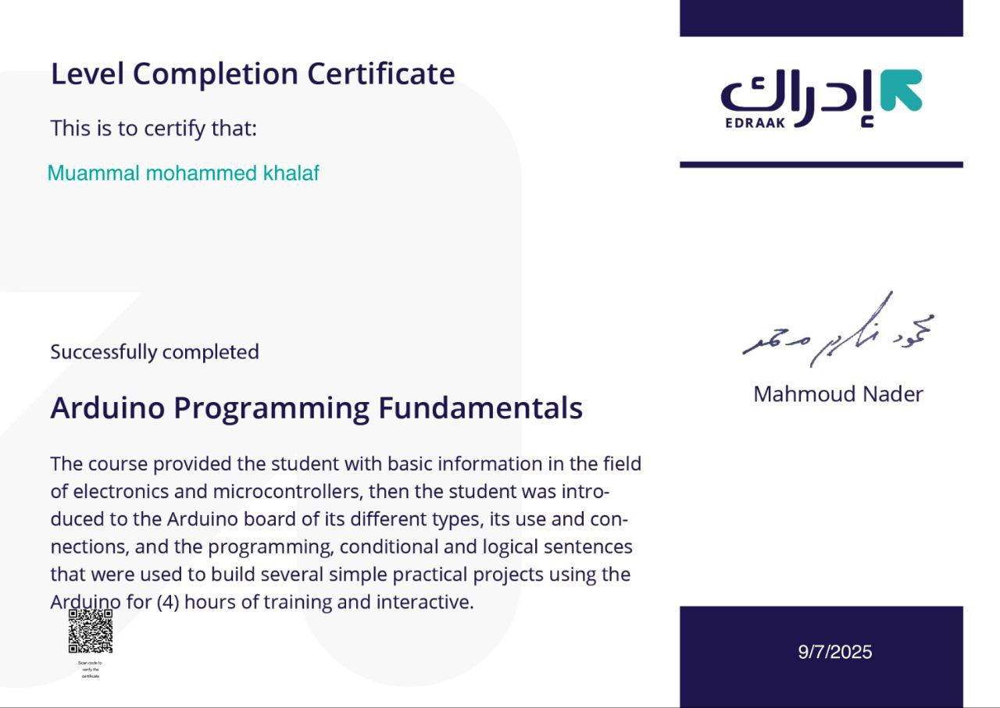

IT Network Student
Passionate about Networking & Programming
About Me
I am an IT student specializing in IT Network at the prestigious Babylon University, one of Iraq's finest institutions. My passion lies in the intersection of networking and programming, where I combine technical expertise with practical solutions.
Technical Skills
Programming Languages
- HTML
- CSS
- JavaScript
- Java
- Python
- C#
Networking
- Network Fundamentals
- Network Security
- Router Configuration
- Switch Management
- Network Protocols
Education
Babylon University
Bachelor in Information Technology
Specialization: Network
Certificates


Future Vision
As I progress towards graduation, my vision is focused on becoming a skilled network engineer who can:
- Design and implement robust network infrastructures
- Contribute to cybersecurity solutions
- Integrate programming skills with network automation
- Lead innovative networking projects
The dynamic field of networking continues to evolve, and I am committed to growing with it, leveraging both my technical skills and problem-solving abilities to make meaningful contributions to the industry.